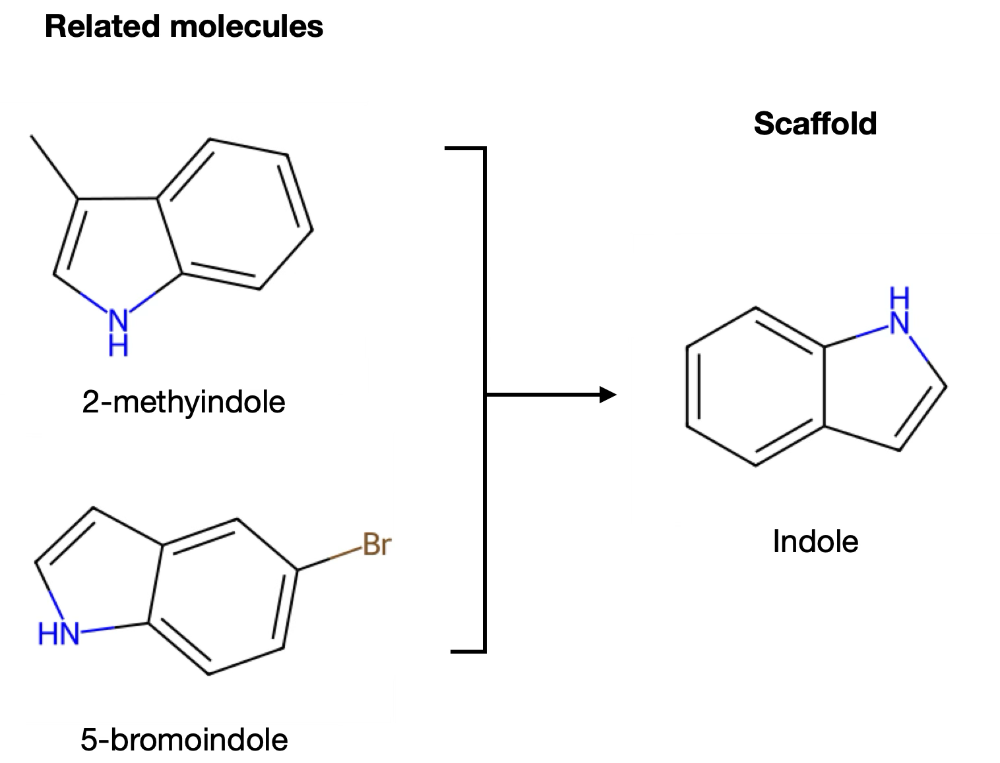

97 scaffold-split · Deep Learning - Graphs: Scaffold Split · mock
09-2 cells 18 and 23–30, read from the Master copy. Every number on this page is computed from the lesson's own file by
scaffold-split-measure.py (splits, shared scaffolds, the forest; the lesson's GCN, cell 42, trained per seed with
cells 45–57's set-up) and scaffold-split-export.py. Drawn at the widget's 550px.
0 · What the lesson says, and what the file does

Cell 18 names two splits. A label split: "Each split may contain molecules with similar backbones (scaffolds)" and "May overestimate performance if model recognizes compounds with similar backbones." A scaffold split: molecules grouped by scaffold, then split by group, which "tests whether the model can generalize to new chemical families." Cells 23–26 find each molecule's Murcko scaffold and count 1,114; cell 28 splits in two stages, 80 / 20 then 50 / 50, by scaffold group; cell 30 plots each part's label proportions. The lesson never trains on a label split, so the claim in cell 18 is asserted and not shown — the widget can show it.
1 · Scaffold page — the figure, on molecules from the file
Cell 18's figure, redrawn: two related molecules, a bracket, their scaffold. The figure's 3-methylindole is in the
file (row 682, inactive); its 5-bromoindole is not, so tryptamine stands in from the same scaffold group. The
quinolones are the arm the figure lacks: ciprofloxacin and norfloxacin are one family (both active), but ciprofloxacin's N1
carries a cyclopropyl ring, which a scaffold keeps, and norfloxacin's an ethyl, which it removes — two scaffolds,
so a scaffold split may put them on opposite sides. One press, Find scaffold: the scaffold's atoms move across as a copy,
the side chains stay behind in --ink-3. Atoms as nodes, as 94 and 95 draw them. Below: the whole file, one outlined
block per scaffold, the example's block(s) ringed.
2 · Split page — the lesson's two stages, both splits, seed 42
The same blocks. Split Label · Scaffold; presses Split 80 / 20 then Split 50 / 50 (cell 27's two stages: the 20% held out first, then halved into validation and test). Under the label split, test cells land inside nearly every block; under the scaffold split every block is one colour. Under each grid, cell 30's figure — each part's label proportions on its 0–1 axis — with the share printed, since 5% is four pixels tall.
3 · Evaluate page — what the test set shares with training, and the score
Two arms for the first measure. A, in the lesson's terms: how many test molecules share a scaffold with a training molecule, and how many test actives share one with a training active — the molecules cell 18 says the model can recognize. B, the arc mock's pick: each test molecule's similarity to its most similar training molecule (Tanimoto on Morgan fingerprints). Then the score, all eleven seeds, the lesson's seed ringed. Presses: Compare (the two counts) then Score.
4 · The rail, as proposed
5 · Calls for you
5.1 · Data
A · the lesson's molecules, embedded as derived numbers only — each molecule's scaffold group, label and part per seed, no SMILES — plus the four molecules drawn, credited as 94 is ("Molecule data: Stokes et al., Cell 2020, via FinGAT") (recommended) |
B · simulated families that behave the same way.
What I found: the FinGAT repository has no licence (GitHub reports none); Stokes et al. 2020 is © 2020 Elsevier, and MIT's
copy of the accepted manuscript is CC BY-NC-ND 4.0. Neither says anything about the supplementary table itself. Your call, as on 94.
5.2 · Pages A · Scaffold · Split · Evaluate, under Step (recommended) | B · Scaffold · Split, with the score as the Split page's last press
5.3 · The two splits' names A · Label · Scaffold, cell 18's words, so the widget matches the lesson that links to it (recommended) | B · Random · Scaffold, the usual name (finding 5, told 2026-10-09: what cell 18 calls a label split is usually called a stratified random split)
5.4 · Parts A · train · validation · test, in cell 28's two stages as two presses (Split 80 / 20, Split 50 / 50), with cell 30's bars under the blocks (recommended) | B · train · test, one press
5.5 · The Scaffold page's example A · Example Indoles · Quinolones in your figure's layout: 3-methylindole and tryptamine to one scaffold; ciprofloxacin and norfloxacin, one family, to two (recommended) | B · Indoles only, as the figure
5.6 · The file, drawn
A · one outlined block per scaffold, largest first, actives first inside each block; the 860 single-molecule scaffolds as loose cells below (recommended) |
B · a table, cell 25's df.head() with its scaffold column
5.7 · Evaluate's first measure (revisits the arc mock's 5.12) A · shared scaffolds: 62% of the label split's test molecules share a scaffold with a training molecule and 5 of its 12 actives share one with a training active; 0 under the scaffold split. The lesson's own terms, and cell 18's claim made literal (recommended) | B · the similarity histogram you picked at the arc: Tanimoto on Morgan fingerprints, which the lesson never introduces
5.8 · The model (revisits the arc mock's 5.11) A · the lesson's GCN, cell 42, trained ahead for each split and seed with cells 45–57's set-up: macro F1 0.66 → 0.60, AUC 0.87 → 0.77, the label split higher on 8 of 11 seeds (recommended) | B · the random forest on fingerprints you picked at the arc: macro F1 0.79 → 0.69, AUC 0.90 → 0.84, higher on 9 of 11
5.9 · The score A · macro F1, the lesson's metric (cells 51, 57) (recommended) | B · AUC | C · both
5.10 · Seed A · 42–51, the default 42 being cell 28's SEED, so the page opens on the lesson's own split (recommended; I re-measure on those seeds) | B · 42 only, no control (hides that the scaffold split's test set runs 154–476 molecules)
5.11 · Colours, as drawn
train --c-group-a, validation --c-group-b, test --c-holdout (generalization's three) · an active
a dark square inside its cell, not --c-event, because --c-event and --c-holdout are the same red ·
the example's block --c-highlight · removed side chains --ink-3. Any to change?
Settled at the arc and not asked again: slug scaffold-split, title
Deep Learning - Graphs: Scaffold Split. Left to the draft, each with a conventional answer: the numbers in a generated
data.js (a _lab script, as 94 and 95), scores computed ahead (no training in the page), core unchanged.